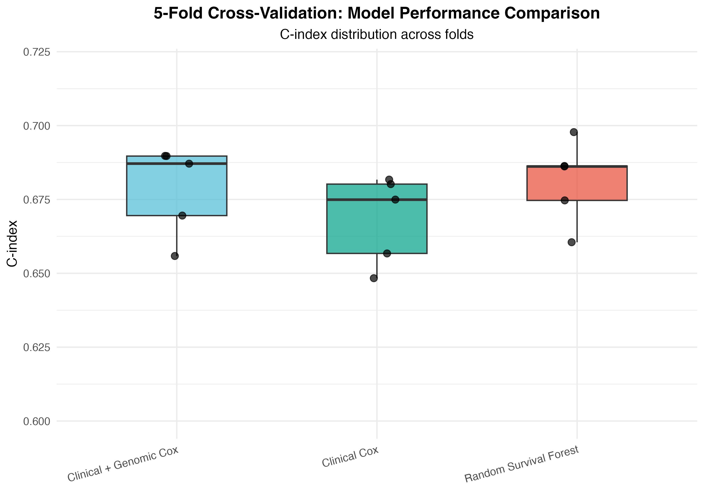
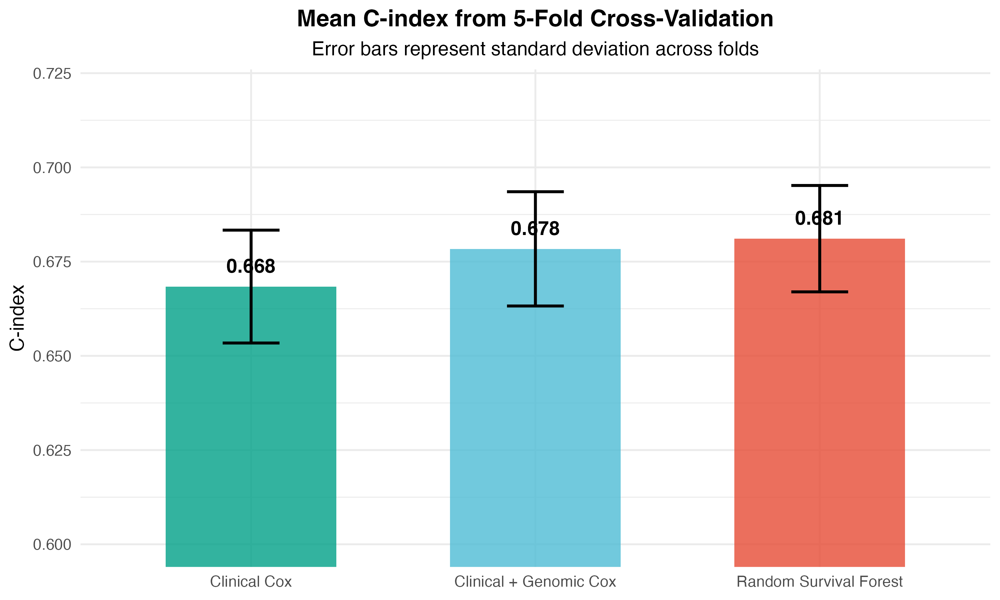
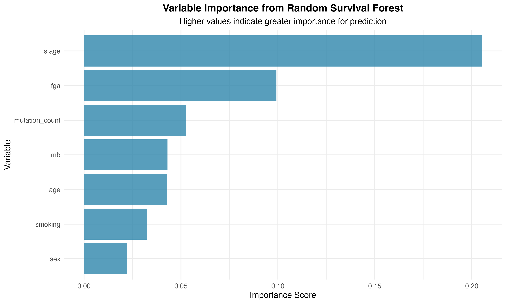
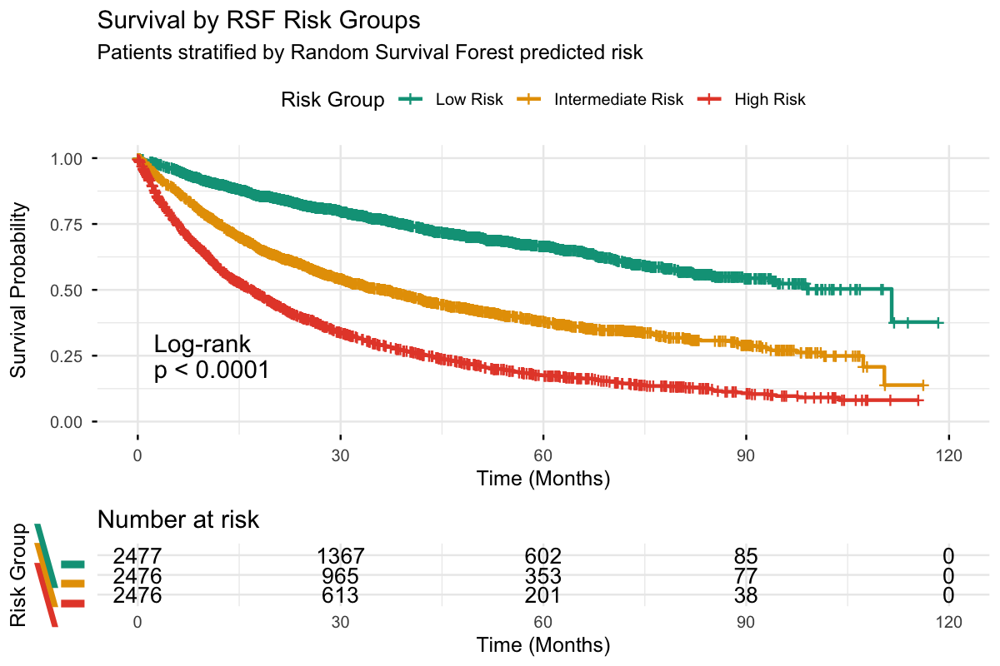
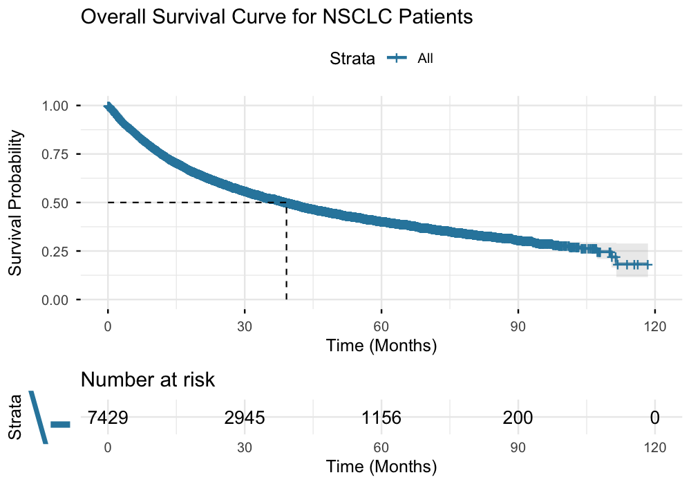
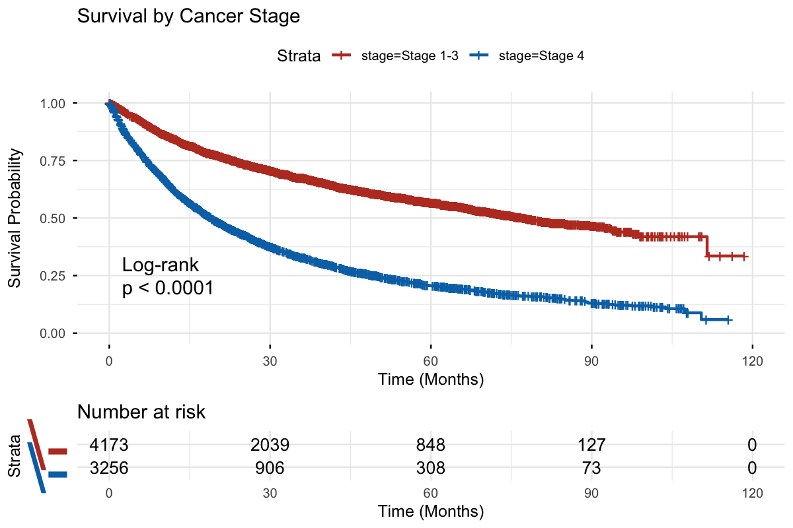

About
Non-small cell lung cancer (NSCLC) accounts for approximately 85% of all lung cancers and remains a leading cause of cancer-related mortality worldwide. While clinical variables such as stage, age, and smoking history are well-established prognostic factors, the incremental value of genomic features for survival prediction remains an active area of investigation.
The MSK-CHORD cohort (Memorial Sloan Kettering Cancer Center, Nature, 2024) provides a unique opportunity to study this question, combining comprehensive clinical annotations with genomic profiling data—including Fraction Genome Altered (FGA), Mutation Count, and Tumor Mutational Burden (TMB)—across thousands of patients.
Research Question
Can genomic features improve the prediction of overall survival in NSCLC beyond standard clinical variables? We compare three modeling approaches and develop a risk stratification tool to enhance clinical interpretability.
Cohort
- Source: MSK-CHORD (cBioPortal, msk_chord_2024)
- Population: 7,809 NSCLC patients → 7,429 after complete-case analysis
- Events: 3,820 deaths (51.4% event rate)
- Median follow-up: 16.4 months
Methods
Variables
Statistical Models
We compared three survival models with increasing complexity:
- Clinical Cox PH Model — age + sex + stage + smoking (baseline clinical variables only)
- Clinical + Genomic Cox PH Model — clinical variables + FGA + mutation count + TMB
- Random Survival Forest (RSF) — all variables, captures non-linear effects and interactions (500 trees for CV, 1,000 for final model)
Evaluation
- 5-fold cross-validation with Harrell's C-index as the primary metric
- Full-data model training for variable importance and risk stratification
- Risk groups defined by tertiles of predicted risk scores
- Kaplan-Meier analysis within risk groups with log-rank tests
Software
Analysis was performed in R using survival, survminer,
randomForestSRC, survcomp, and caret packages.
Code is fully reproducible with set.seed(629).
Results
Model Performance
All three models demonstrated discriminative ability above random (C-index > 0.5), with the Random Survival Forest achieving the highest cross-validated performance. Adding genomic features to the clinical model yielded a consistent improvement in both Cox and RSF frameworks.
The RSF model achieved the highest median C-index across folds, with narrower variability than either Cox model.

Adding genomic variables to the clinical Cox model improved the mean C-index from 0.668 to 0.678 (+1.5%).

Variable Importance
Cancer stage dominated all models as the strongest predictor of survival, followed by Fraction Genome Altered (FGA), mutation count, and TMB. This highlights the prognostic value of genomic instability measures even after adjusting for clinical stage.
Stage (0.205) is the dominant predictor, but FGA (0.099) and mutation count (0.053) are the top genomic contributors.

Risk Stratification
Patients were divided into three risk groups (tertiles) based on RSF-predicted mortality scores. The resulting groups showed dramatically different survival outcomes, demonstrating the clinical utility of the model.
The three RSF-derived risk groups show significantly different survival curves (log-rank p < 0.001), with a 2.5× difference in median OS between low and high risk.

Additional Survival Analysis


Conclusions
Limitations & Future Work
- External validation on independent NSCLC cohorts is needed to confirm generalizability
- Tumor purity was excluded due to high missingness; imputation may unlock additional signal
- Specific driver mutations (EGFR, ALK, KRAS) could further refine predictions
- Progression-free survival analysis could complement the overall survival endpoint
- A clinical risk calculator tool could translate these findings into bedside decision support